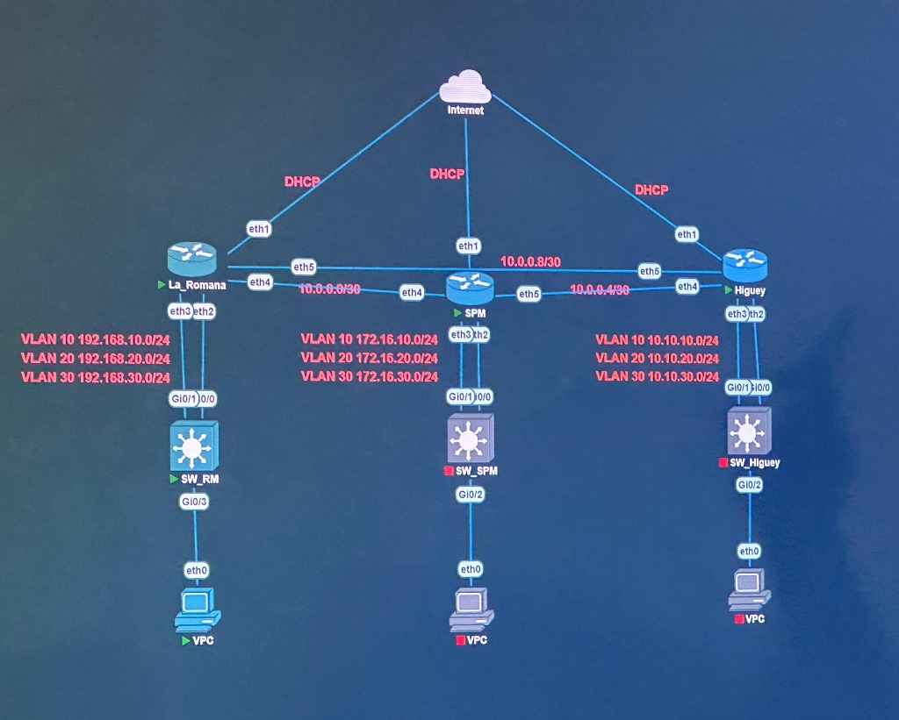

⚙️ Personalizador Dinámico de Scripts para el Aula
Actualiza los comandos en tiempo realCambia aquí los datos de tus vecinos, el WiFi del salón o el tipo de puerto de tu Switch Cisco 2960-S. Todos los bloques de código de esta pestaña se actualizarán automáticamente.
Como tu hAP lite tiene solo 4 puertos RJ45 (ether1 WAN, ether2-3 Bonding y ether4 Vecino 1), conectamos al Vecino 2 en el puerto 24 del Switch Cisco (VLAN 40) y lo subimos por el mismo Bonding como vlan40-vecino2.
✅ Progreso en Clase
0%📸 Topología de Referencia del Curso

Tu bloque asignado es JANIO-SW: VLAN 10 (172.22.10.0/24), VLAN 20 (172.22.20.0/24) y VLAN 30 (172.22.30.0/24).
🔌 Mapa Exacto de Conexión de Cables Físicos (Dónde va cada cable)
En tu MikroTik hAP lite (4 puertos RJ45 + WiFi)
-
Puerto
ether1-WAN: Internet por Cable (DHCP dist=1) -
Interfaz
wlan1(WiFi): Internet Backupstation(DHCP dist=2) -
Puertos
ether2yether3: Bonding LACP → Puertos 1 y 2 Switch -
Puerto
ether4-Vecino1: Cable directo al Router Vecino 1
En tu Switch Cisco 2960-S (24 Puertos)
-
Puertos
1 y 2(Po1): EtherChannel LACP + Trunk (10,20,30,40) -
Puertos
3 al 8: VLAN 10 (estudiantes) •172.22.10.0/24 -
Puertos
9 al 16: VLAN 20 (docentes) •172.22.20.0/24 -
Puertos
17 al 23: VLAN 30 (administracion) •172.22.30.0/24 -
Puerto
24: VLAN 40 (vecino2_wan) → Cable a Vecino 2
Configuración Completa del Switch Cisco 2960-S (VLANs, SVI, SSH y EtherChannel LACP)
Si el switch tiene configuración vieja, bórralo primero con delete flash:vlan.dat, erase startup-config y reload. Luego pega este bloque:
Configuración de Bonding LACP, VLANs 10/20/30/40, 3 Servidores DHCP y Doble WAN (Cable + WiFi Backup)
ether4 del MikroTik, entra por MAC-WinBox y haz un reset en blanco (/system reset-configuration no-defaults=yes skip-backup=yes). Al reiniciar, entra de nuevo por MAC-WinBox y pega este script en New Terminal. Luego ya puedes pasar tu PC a cualquier puerto del Switch Cisco (puertos 3 al 23).
Enlaces /30 + Rutas Estáticas con Failover en Triángulo, OSPF y VPN IPsec
Módulo 1 y Módulo 2: Guía Exhaustiva de Conmutación Cisco IOS
Haz clic en cualquiera de los bloques o usa el buscador superior para filtrar comandos de los 6 laboratorios de Cisco.
1. Conceptos de Conmutación, Borrado de Fábrica (vlan.dat) y Plantilla SDM IPv6 (Lab 1) Expandir / Contraer
2. Filtra y Reenvía: Busca la MAC de destino. Si no está (unicast desconocido), inunda (flood) todos los puertos de esa VLAN.
3. Evita Bucles: Con STP bloqueando enlaces redundantes.
• Cut-Through: Reenvía apenas lee los primeros 6 bytes (MAC destino).
• Fragment-Free: Lee los primeros 64 bytes para filtrar colisiones (runts).
• DUPLX: Apagado (Half-Duplex), Verde (Full-Duplex).
• SPEED: Apagado (10M), Verde fijo (100M), Verde parpadeando (1000M).
! --- A. INICIALIZAR / BORRAR UN SWITCH DE FÁBRICA --- Switch> enable Switch# show flash: Switch# delete flash:vlan.dat Switch# erase startup-config Switch# reload ! --- B. HABILITAR PLANTILLA SDM PARA IPV6 EN CATALYST 2960 --- S1# show sdm prefer S1# configure terminal S1(config)# sdm prefer dual-ipv4-and-ipv6 default S1(config)# end S1# reload ! --- C. ADMINISTRAR TABLA MAC Y MAC ESTÁTICA (PARTE 4 LAB 1) --- S1# show mac address-table S1# show mac address-table dynamic S1# clear mac address-table dynamic S1(config)# mac address-table static 0050.56BE.6C89 vlan 99 interface fastEthernet 0/6 S1(config)# no mac address-table static 0050.56BE.6C89 vlan 99 interface fastEthernet 0/6
2. Ajustes Básicos del Switch, SVI IPv4/IPv6 y Configuración de SSH (Lab 1 y PT 1.3.6) Expandir / Contraer
enable configure terminal hostname S1 no ip domain-lookup enable secret class service password-encryption banner motd #Acceso Restringido. Solo Personal Autorizado.# ! Asegurar Consola line console 0 password cisco login logging synchronous exec-timeout 5 0 exit ! Configurar SSH v2 (Reemplazar Telnet por SSH) ip domain-name canoacademy.com username admin privilege 15 secret admin123 crypto key generate rsa general-keys modulus 1024 ip ssh version 2 line vty 0 15 transport input ssh login local logging synchronous exit ! Configurar SVI de Administración (VLAN 99) con IPv4, IPv6 y Gateway vlan 99 name Management exit interface vlan 99 ip address 192.168.1.2 255.255.255.0 ipv6 address 2001:db8:acad::2/64 ipv6 address fe80::2 link-local no shutdown exit ip default-gateway 192.168.1.1 ! Configurar Velocidad, Dúplex y Auto-MDIX en un puerto físico interface fastEthernet 0/6 description Conectado a PC-A switchport mode access switchport access vlan 99 duplex full speed 100 mdix auto no shutdown end copy running-config startup-config
3. VLANs, Parking_Lot, Enlaces Troncales 802.1Q y DTP (Labs 2 y 3) Expandir / Contraer
! 1. Crear VLANs de Datos, Administración, Estacionamiento (Parking_Lot) y Nativa S1(config)# vlan 10 S1(config-vlan)# name Administracion S1(config-vlan)# vlan 20 S1(config-vlan)# name Ventas S1(config-vlan)# vlan 30 S1(config-vlan)# name Operaciones S1(config-vlan)# vlan 999 S1(config-vlan)# name Parking_Lot S1(config-vlan)# vlan 1000 S1(config-vlan)# name Native S1(config-vlan)# exit ! 2. Asignar puerto de usuario a VLAN 20 S1(config)# interface f0/6 S1(config-if)# switchport mode access S1(config-if)# switchport access vlan 20 S1(config-if)# exit ! 3. Enviar todos los puertos NO usados a VLAN 999 (Parking_Lot) y apagarlos S1(config)# interface range f0/2-5, f0/7-24, g0/1-2 S1(config-if-range)# switchport mode access S1(config-if-range)# switchport access vlan 999 S1(config-if-range)# shutdown S1(config-if-range)# exit ! 4. Configurar Troncal 802.1Q estático, cambiar VLAN Nativa a 1000 y desactivar DTP S1(config)# interface f0/1 S1(config-if)# switchport mode trunk S1(config-if)# switchport trunk native vlan 1000 S1(config-if)# switchport trunk allowed vlan 10,20,30,1000 S1(config-if)# switchport nonegotiate S1(config-if)# end
4. Inter-VLAN Routing: Router-on-a-Stick y Switch Multicapa Capa 3 (Lab 4) Expandir / Contraer
! OPCIÓN A: ROUTER-ON-A-STICK (EN ROUTER R1) R1(config)# interface g0/0/1.10 R1(config-subif)# encapsulation dot1Q 10 R1(config-subif)# ip address 192.168.10.1 255.255.255.0 R1(config)# interface g0/0/1.20 R1(config-subif)# encapsulation dot1Q 20 R1(config-subif)# ip address 192.168.20.1 255.255.255.0 R1(config)# interface g0/0/1.30 R1(config-subif)# encapsulation dot1Q 30 R1(config-subif)# ip address 192.168.30.1 255.255.255.0 R1(config)# interface g0/0/1.1000 R1(config-subif)# encapsulation dot1Q 1000 native R1(config-subif)# exit R1(config)# interface g0/0/1 R1(config-if)# no shutdown ! OPCIÓN B: SWITCH MULTICAPA CAPA 3 MLS(config)# ip routing MLS(config)# interface vlan 10 MLS(config-if)# ip address 192.168.10.1 255.255.255.0 MLS(config-if)# no shutdown MLS(config)# interface g0/1 MLS(config-if)# no switchport MLS(config-if)# ip address 10.10.10.2 255.255.255.252 MLS(config-if)# no shutdown
5. Spanning Tree (STP / Rapid PVST+) y Agregación de Enlaces EtherChannel (Lab 5) Expandir / Contraer
S1(config)# spanning-tree mode rapid-pvst S1(config)# spanning-tree vlan 10 root primary S2(config)# spanning-tree vlan 10 root secondary ! EtherChannel LACP (Grupo 1) S1(config)# interface range f0/1 - 2 S1(config-if-range)# shutdown S1(config-if-range)# channel-group 1 mode active S1(config-if-range)# no shutdown S1(config-if-range)# exit S1(config)# interface port-channel 1 S1(config-if)# switchport mode trunk S1(config-if)# switchport trunk native vlan 1000 S1(config-if)# switchport trunk allowed vlan 10,20,1000 S1(config-if)# end S1# show etherchannel summary
6. Seguridad en Capa 2: Port Security, DHCP Snooping, DAI, PortFast/BPDU Guard y SNMP (Lab 6) Expandir / Contraer
! 1. Port Security en S1 F0/6 (Max 3, Restrict, 60m Inactivity) S1(config)# interface f0/6 S1(config-if)# switchport mode access S1(config-if)# switchport access vlan 10 S1(config-if)# switchport port-security S1(config-if)# switchport port-security maximum 3 S1(config-if)# switchport port-security violation restrict S1(config-if)# switchport port-security aging time 60 S1(config-if)# switchport port-security aging type inactivity ! 2. Port Security en S2 F0/18 (Sticky, Max 2, Protect, 60m Absolute) S2(config)# interface f0/18 S2(config-if)# switchport mode access S2(config-if)# switchport access vlan 10 S2(config-if)# switchport port-security S2(config-if)# switchport port-security mac-address sticky S2(config-if)# switchport port-security maximum 2 S2(config-if)# switchport port-security violation protect S2(config-if)# switchport port-security aging time 60 ! 3. DHCP Snooping y Dynamic ARP Inspection (DAI) S2(config)# ip dhcp snooping S2(config)# ip dhcp snooping vlan 10 S2(config)# ip arp inspection vlan 10 S2(config)# ip arp inspection validate src-mac dst-mac ip S2(config)# interface f0/1 S2(config-if)# ip dhcp snooping trust S2(config-if)# ip arp inspection trust S2(config)# interface f0/18 S2(config-if)# ip dhcp snooping limit rate 5 ! 4. PortFast y BPDU Guard S1(config)# interface f0/6 S1(config-if)# spanning-tree portfast S1(config-if)# spanning-tree bpduguard enable ! 5. SNMP S1(config)# snmp-server community public RO S1(config)# snmp-server community private RW
Módulos 3, 4 y 5: Guía Exhaustiva de MikroTik RouterOS
Todos los comandos y pasos de WinBox para Configuración Básica (Módulo 3), VPN IPsec Site-to-Site (Módulo 4) y Seguridad / Firewall Avanzado (Módulo 5).
Módulo 3: Configuración Básica de MikroTik, WAN/LAN, NAT, DHCP, Queues y Backups Expandir / Contraer
/user set admin password=mikro123 /system identity set name=Mkt_01 /system note set show-at-login=yes note="ADVERTENCIA: ESTE EQUIPO ESTA SIENDO MONITOREADO POR NUESTRO NOC!" /interface ethernet set [ find default-name=ether1 ] name=WAN set [ find default-name=ether2 ] name=LAN /ip dhcp-client add interface=WAN disabled=no /ip address add address=192.168.0.1/24 interface=LAN network=192.168.0.0 /ip firewall nat add chain=srcnat out-interface=WAN action=masquerade /ip pool add name=dhcp_pool0 ranges=192.168.0.10-192.168.0.200 /ip dhcp-server add address-pool=dhcp_pool0 interface=LAN name=dhcp1 lease-time=10m disabled=no /ip dhcp-server network add address=192.168.0.0/24 gateway=192.168.0.1 dns-server=8.8.8.8,8.8.4.4 /queue simple add name="Limite-PC" target=192.168.0.200/32 max-limit=64k/128k /system backup save name=respaldo_completo /export file=script_editable
Módulo 4: VPN IPsec Site-to-Site entre Routers MikroTik (Fase 1, Fase 2 y NAT Bypass) Expandir / Contraer
/ip ipsec profile
add name=IPSEC1 hash-algorithm=sha1 enc-algorithm=aes-256 dh-group=modp1024 lifetime=8h nat-traversal=yes
/ip ipsec peer
add name=Cliente address=45.77.219.87 profile=IPSEC1 exchange-mode=main
/ip ipsec identity
add peer=Cliente auth-method=pre-shared-key secret="Curso!!123!!$"
/ip ipsec proposal
add name=PRO-IPSEC1 auth-algorithms=sha1 enc-algorithms=aes-256-cbc lifetime=30m pfs-group=modp1024
/ip ipsec policy
add peer=Cliente tunnel=yes src-address=10.90.1.0/24 dst-address=192.168.11.0/24 \
action=encrypt level=require ipsec-protocols=esp proposal=PRO-IPSEC1
# Regla NAT Bypass en posición 0 (arriba del masquerade)
/ip firewall nat
add chain=srcnat src-address=10.90.1.0/24 dst-address=192.168.11.0/24 action=accept place-before=0
/ping 192.168.11.1 src-address=10.90.1.1
Módulo 5: Seguridad en MikroTik (Anti-PortScan, Anti-DoS, SYN-Flood) y Prácticas 1, 2 y 3 Expandir / Contraer
# 1. Anti-Port Scan (PSD), Anti-DoS y SYN Flood /ip firewall filter add chain=input protocol=tcp psd=21,3s,3,1 action=add-src-to-address-list address-list="port-scanners" address-list-timeout=2w add chain=input src-address-list="port-scanners" action=drop add chain=input protocol=tcp connection-limit=10,32 action=add-src-to-address-list address-list=blocked-addr address-list-timeout=1d add chain=input protocol=tcp src-address-list=blocked-addr connection-limit=3,32 action=tarpit add chain=forward protocol=tcp tcp-flags=syn connection-state=new action=jump jump-target=SYN-Protect add chain=SYN-Protect protocol=tcp tcp-flags=syn limit=400,5 connection-state=new action=accept add chain=SYN-Protect protocol=tcp tcp-flags=syn connection-state=new action=drop /ip settings set tcp-syncookies=yes # 2. Práctica 1: Redirección DNS y bloqueo lista "restricted" /ip firewall nat add action=redirect chain=dstnat comment=DNS dst-port=53 protocol=tcp to-ports=53 add action=redirect chain=dstnat dst-port=53 protocol=udp to-ports=53 /ip firewall filter add chain=forward dst-address-list=restricted action=drop # 3. Práctica 2: Bloquear Windows Update con TLS-Host /ip firewall raw add action=drop chain=prerouting protocol=tcp tls-host=windowsupdate.microsoft.com add action=drop chain=prerouting protocol=tcp tls-host=*.update.microsoft.com add action=drop chain=prerouting protocol=tcp tls-host=*.windowsupdate.microsoft.com # 4. Práctica 3: Bloquear YouTube (Layer-7, Content y TLS) /ip firewall layer7-protocol add name=Youtube regexp="^.+(youtube.com|googlevideo.com).*\$" /ip firewall filter add action=drop chain=forward layer7-protocol=Youtube add action=drop chain=forward protocol=tcp tls-host="*.youtube.*" add action=drop chain=forward protocol=tcp tls-host="*.googlevideo.*"
⚡ Tabla Comparativa Rápida: Comandos Cisco IOS vs. MikroTik RouterOS
| Tarea / Función | Cisco IOS (Switch / Router) | MikroTik RouterOS (CLI) |
|---|---|---|
| Cambiar nombre del equipo | hostname JANIO-SW | /system identity set name=Mkt-Janio |
| Crear agregación LACP | int range gi1/0/1-2 → channel-group 1 mode active | /interface bonding add name=bonding1 slaves=ether2,ether3 mode=802.3ad |
| Crear VLAN | vlan 10 → name estudiantes | /interface vlan add name=vlan10 vlan-id=10 interface=bonding1 |
| Asignar dirección IP | int vlan 30 → ip address 172.22.30.2 255.255.255.0 | /ip address add address=172.22.30.1/24 interface=vlan30 |
| Borrar a valores de fábrica | delete flash:vlan.dat + erase startup-config + reload | /system reset-configuration no-defaults=yes skip-backup=yes |